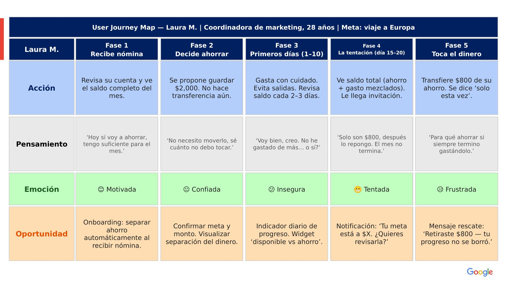
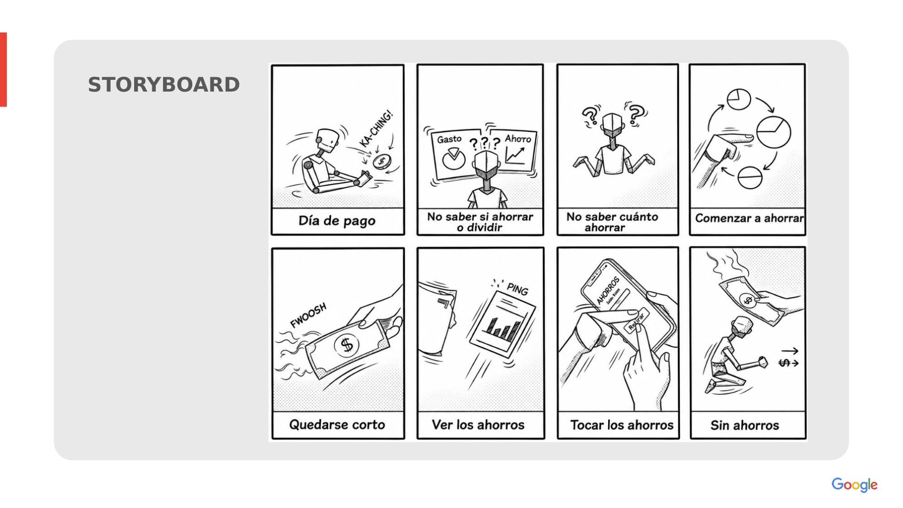

El reto
Los jóvenes adultos con ingresos propios quieren ahorrar para metas concretas, pero las herramientas existentes —apps bancarias, hojas de cálculo, sobres físicos— no atienden la dimensión conductual del ahorro. La tentación de tocar el dinero, la falta de visibilidad del progreso y los ingresos variables hacen que el hábito se rompa una y otra vez.
Investigación
Para entender el problema antes de diseñar una sola pantalla, combiné tres fuentes: revisión de literatura sobre comportamiento financiero en México (CNBV, INEGI), análisis de productos similares en el mercado, y conversaciones informales con jóvenes adultos de 25 a 35 años con ingresos propios — tanto en empleo formal como freelance.
La intención de ahorrar existe, pero la brecha está en el mantenimiento del hábito. Tanto quienes tienen ingresos fijos como variables coinciden en tocar el dinero ahorrado cuando no hay una separación clara y visible.
Esto definió los tres ejes de diseño del proyecto: protección conductual del ahorro, retroalimentación visual del progreso, y flexibilidad ante ingresos irregulares.
Cuatro fricciones que cualquier solución debía resolver:
El dinero no se siente "separado"
El ahorro vive en la misma cuenta que el dinero disponible. Sin separación mental y visual clara, la tentación de usarlo es constante.
El progreso es invisible
No existe retroalimentación visual sobre qué tan cerca están de su meta. Sin ver el avance, la motivación se pierde rápido.
Los ingresos variables no tienen sistema
Quienes tienen ingresos irregulares no saben cuánto ahorrar sin comprometer sus gastos fijos, así que ahorran por impulso o no ahorran.
Tocar el ahorro se siente como fracaso total
Cuando usan parte del ahorro en una emergencia, sienten que "resetearon" y abandonan el hábito por completo, aunque el daño fue parcial.
Síntesis
A partir de la investigación, sinteticé dos arquetipos de usuario que representan los dos perfiles de ingreso más comunes entre el grupo objetivo: ingreso fijo e ingreso variable.
Laura M. — Arquetipo 1
Coordinadora de Marketing — 28 años — CDMX"Sé que debería ahorrar más, pero entre la renta, el gym y salir los fines… el dinero se va solo. Y cuando lo veo, lo toco."
- Se le olvida cuánto lleva ahorrado si no lo revisa seguido
- Toca el dinero "solo una vez" y eso rompe el hábito
- Las apps bancarias no le muestran su progreso hacia metas
- Ver visualmente qué tan cerca está de su meta
- Separación clara entre dinero para gastar y dinero para ahorrar
- Recordatorios no intrusivos que la mantengan motivada
Diego R. — Arquetipo 2
Diseñador gráfico independiente — 31 años — CDMX"Hay meses que gano bien y otros que casi nada. Cuando entra la lana quiero ahorrar, pero no sé cuánto puedo guardar sin quedarme corto."
- No sabe cuánto ahorrar porque sus ingresos no son fijos
- Toca el ahorro en meses flojos y siente que "resetea"
- Le cuesta diferenciar entre gasto personal y gasto de trabajo
- Un sistema flexible que se adapte a meses buenos y malos
- Saber cuánto puede guardar sin comprometer gastos fijos
- Sentir que el progreso no se pierde, aunque un mes no ahorre

El journey map de Laura M. evidenció el momento exacto donde el hábito se rompe: no es al inicio, cuando la intención es alta, sino semanas después, cuando una emergencia menor la lleva a tocar el ahorro y sentir que tiene que "empezar de cero".
Ideación
Antes de diseñar una sola pantalla, mapeé el ciclo completo del problema en ocho viñetas: desde el día de pago hasta el momento en que el usuario, sin un sistema claro, termina por tocar — y perder — sus ahorros. Este storyboard se volvió el punto de referencia constante durante todo el proceso: cada decisión de diseño debía romper este ciclo en algún punto.

El storyboard hace visibles tres de los cuatro pain points identificados en la investigación: la indecisión sobre cuánto ahorrar, la falta de visibilidad del progreso, y la tentación de tocar el dinero ahorrado.
Flujo de creación de meta
Con el problema mapeado, diseñé el flujo de creación de una meta de ahorro — el momento más crítico del producto, donde el usuario pasa de la intención a la acción. Una decisión clave fue ofrecer separación automática de fondos como alternativa al ingreso manual: si el usuario no confía en su propia disciplina para mover el dinero cada mes, la app puede hacerlo por él.
La rama "¿Separar automáticamente?" responde directamente al hallazgo sobre la falta de flexibilidad ante ingresos variables — el usuario freelance no siempre puede comprometerse a un monto fijo, así que el flujo le da control sin exigirle esa disciplina constante.
Del Papel al Pixel: Proceso de Diseño
El desarrollo de la interfaz comenzó con wireframes de baja fidelidad para validar jerarquía y flujo, y escaló a mockups de alta fidelidad en Figma. Antes de llegar a la versión final, compartí las primeras versiones de alta fidelidad con un grupo informal de usuarios — amigos y familiares dentro del rango de edad objetivo. El testing no fue un estudio moderado formal, pero sí generó dos hallazgos que cambiaron decisiones de diseño concretas.


Lo que cambió después del testing
La app se sentía "rústica", no moderna. El feedback más recurrente fue sobre la paleta de color. Limpié el fondo de la aplicación y reforcé puntos de color oscuro como acento, en lugar de saturar la interfaz con color, para lograr una sensación más minimalista y moderna.
Faltaban señales que reforzaran el hábito. Varios usuarios mencionaron que les gustaría ver elementos visuales que ayudaran a valorar el progreso del ahorro, no solo los números. Esto reforzó la decisión de incluir el sistema de racha visual y el modal de celebración al completar una meta.
Producto Final
El resultado es una app que convierte cada meta de ahorro en algo visible, tangible y — sobre todo — difícil de abandonar.
-
01 / Vista General
Todo tu ahorro, de un vistazo
Un vistazo completo al estado de tus ahorros: total general, progreso por meta, y el sistema de racha visual — verde cuando vas al día, naranja cuando una meta necesita atención.

-
02 / Crear Meta
Definir una meta en menos de un minuto
Nombre, monto, fecha límite y un mensaje motivacional opcional que aparece como recordatorio — sin formularios largos ni pasos innecesarios.

-
03 / Transparencia
Progreso siempre visible
Cuánto llevas, cuánto falta, fecha estimada de cumplimiento y el historial completo de movimientos — la visibilidad que la investigación identificó como ausente en las herramientas tradicionales.
-
04 / Gamificación
El cierre del ciclo
El momento que el storyboard original mostraba roto: en lugar de "sin ahorros", el usuario llega a una celebración real — confeti, monto total, y la opción inmediata de crear la siguiente meta.

El sistema de "racha" es una decisión deliberadamente económica: no requiere pantalla ni ícono adicional, vive como un cambio de color dentro del mismo componente de tarjeta que ya existía en Home.


Conclusión
Este proyecto me enseñó que el diseño conductual no se resuelve solo con buenas intenciones de producto — se resuelve con decisiones visuales específicas. El cambio de paleta de color después del testing me hizo entender que "minimalista" y "confiable" no son solo palabras de moodboard: un usuario las siente o no las siente, y el único termómetro real es mostrarles el diseño y escuchar.
Si retomara este proyecto, el siguiente paso sería un testing más estructurado — con tareas específicas y métricas de éxito definidas — en lugar de feedback abierto. También exploraría a fondo la flexibilidad para ingresos variables más allá de la separación automática, ya que es uno de los pain points que el flujo actual resuelve solo parcialmente.
Siguientes Pasos
— Sistema de notificaciones inteligentes antes de que una racha se rompa, no solo después.
— Modo "ingreso variable" que sugiera montos de ahorro según el historial del usuario.
— Exploración de metas compartidas, ahorro en pareja o grupo — el punto de partida natural para Cúmulo Web.